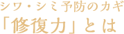
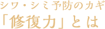
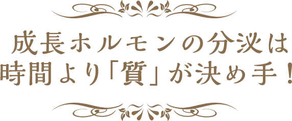

女性の肌悩みの代表格といえば、シワとシミですよね。加齢も原因の一つですが、大きく影響するのは日中に受ける肌ダメージです。美しい肌を保つためには、ダメージ要因を避けること、受けたダメージはその日のうちにリセットすることが鍵になります。

-
睡眠開始から3時間の睡眠の質を上げよう
日中に受けた肌ダメージは、睡眠中に修復されます。ただし、寝れば寝るほど良いわけではありません。細胞の修復を促す「成長ホルモン」は、睡眠開始後、3時間以内に質のいい深い眠りに入ると分泌されます。休日の「寝だめ」も、肌にとっては無意味。毎日の睡眠の「質」を大事にしてください。
-
自然な眠りにいざなう体内時計のリズム
なかなか寝つけないとき、眠りが浅いときは、体内時計が乱れている可能性があります。朝太陽とともに目覚め、夜になると自然に眠くなるのは、体に備わる体内時計が一定のリズムを刻んでいるためです。朝〜夜のすごし方を工夫して、睡眠の質を高めましょう。
-
07:30AM
乱れた体内時計は、光を浴びることでリセットされます。夜ふかしした日も、毎朝決まった時間に起きて太陽を浴びましょう。曇りの日は、明るい場所でメイクするのもおすすめです。 -
17:00PM
夕方は、1日の中でもっとも体温が高くなる時間帯。軽い運動を行い、適度な疲労を与えると、夜には体温が大きく低下して寝つきがよくなります。通勤・買い物のときは、いつもより歩幅を開き、早足で歩くだけでもいい運動に。 -
22:00PM
夜は、心身ともにリラックスすることが大切。寝る1時間前は、脳を刺激するスマホやテレビをオフにして、ぬるめのおふろに入りましょう。入浴で上昇した体温が1時間後に下がり始め、自然に眠くなってきます。
寝酒は厳禁
「眠れないときは寝酒する」という行為は逆効果。アルコールを摂取した直後は、高くなった体温が急激に下がるため眠くなります。しかし、摂取から3時間後には体温が上昇。眠りが浅くなってしまいます。ホットミルクやノンカフェインのホットティーがおすすめです。
美容成分は夜に摂取
睡眠中は肌の血管が開き、ゆっくりと血流量が上がっていくため、寝る前に美容ドリンクを飲むのもよいでしょう。血流とともに美容成分をめぐらせることで、睡眠中の修復力のサポートが期待できます。ただし、美容ドリンクにはカフェインを含むものがあるので注意してください。カフェインをとると脳が覚醒し、眠りを妨げてしまいます。
※ドクターによる監修は一般論に関してのみとなり、このページは広告ではありません。
また、他のページにおいても、ドクターが掲載商品や特定商品への保証や購入等を推薦するものではありません。


-


「飲むドモ」お客様インタビュー
ぐっすり休んで、キレイを手に入れる。あなたも始めませんか。 -


美肌を生み出す秘密とは？睡眠とお肌の関係
成長ホルモンの分泌量が減ると、お肌が乾燥しハリが失われます。 -

質の良い睡眠が美肌を生み出す！
ぐっすり眠れた朝は、肌のツヤがよく、化粧ノリが良い、そのわけは？ -

【調査】4週間の摂取で変化!?「しわ」編
眠りの質を高めることで、しわにどのような変化が？ -

【調査】4週間の摂取で変化!?「しみ」編
眠りの質を高めると、シミ・キメにも改善を示す結果が。 -

「飲むドモ」 口コミ
飲み続けている理由がわかる。実感の声を今すぐチェック！ -


ソーシャルトレンドニュース×飲むドモホルンリンクル
忙しい女性必見！短い睡眠でキレイになるには、○○ホルモンがカギ -

第2回 ソーシャルトレンドニュース×飲むドモホルンリンクル
「美味しすぎる美容ドリンク」飲むドモホルンリンクルって実際どうなの？感想まとめ -

第3回 ソーシャルトレンドニュース×飲むドモホルンリンクル
お正月のダラダラ睡眠は卒業！「グッスリ寝て女子力あげる」4つの睡眠法をやってみた